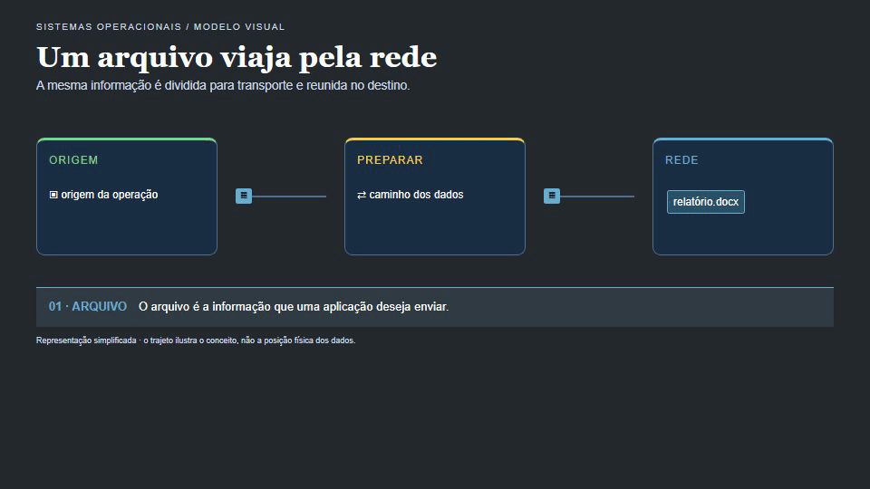
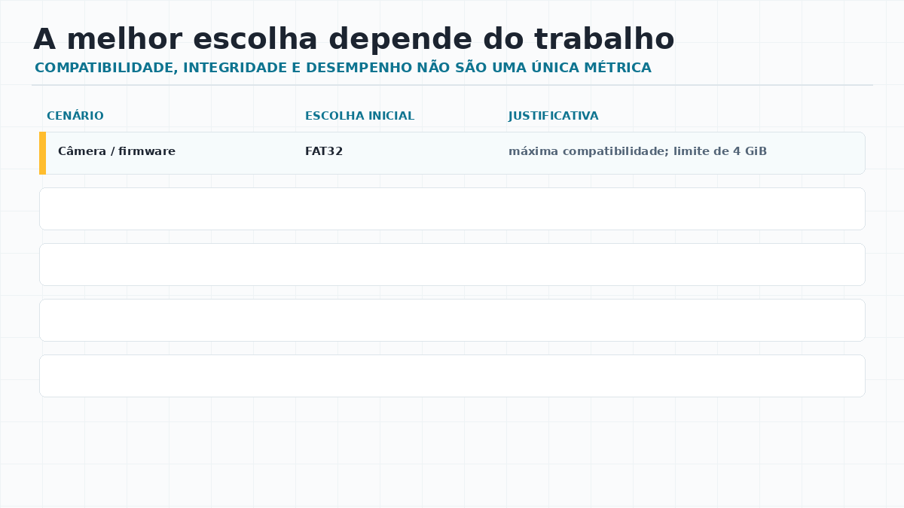

Leitura sequencial
Vídeo, backup e cargas analíticas podem beneficiar-se de operações grandes e previsíveis.
SISTEMAS OPERACIONAIS · AULA 06
Uma foto RAW, uma transação de banco de dados, um pendrive de apresentação e um vídeo de 12 GiB são bytes — mas não pedem a mesma embalagem, o mesmo caminho, a mesma unidade de alocação ou a mesma estratégia de recuperação.
A PERGUNTA QUE ORGANIZA A AULA
Soja, suco concentrado ou petróleo podem viajar a granel e ser fracionados no destino. Isso reduz embalagens repetidas, mas reduz a separação imediata entre cada unidade. Produtos de varejo fazem o movimento oposto: cada item é identificado, embalado e acessível individualmente.
Uma foto RAW costuma ocupar mais espaço que JPEG porque preserva mais informação e normalmente não usa a mesma compressão. Aqui, “a granel” significa menos fragmentação e menos embalagem repetida; não uma regra universal de tamanho.
01 · GRANULARIDADE
Em computação, arquivos pequenos, objetos, blocos, registros e páginas de banco de dados têm metadados, índices e operações de I/O próprios. Separar tudo ajuda a localizar e controlar; agrupar pode reduzir operações e favorecer leitura sequencial. O sistema operacional precisa equilibrar essas escolhas.

Vídeo, backup e cargas analíticas podem beneficiar-se de operações grandes e previsíveis.
Documentos, objetos web e registros precisam ser encontrados, autorizados ou alterados separadamente.
Não se escolhe tecnologia apenas pelo tamanho: frequência de escrita, concorrência e recuperação também importam.
02 · O DISPOSITIVO APARECEU
Ao conectar um SSD externo, o sistema pode reconhecer o controlador USB e enxergar seus blocos, mas ainda precisa identificar a partição e possuir um driver capaz de interpretar o sistema de arquivos gravado nela. É por isso que um volume APFS pode existir para o Windows sem se tornar navegável, e um volume ext4 não vira automaticamente uma unidade utilizável no macOS.

| Camada | Pergunta que resolve | Exemplo de falha |
|---|---|---|
| Dispositivo | O hardware foi detectado? | Cabo, energia ou controlador USB. |
| Partição | Há um volume identificável? | Partição ausente, corrompida ou não inicializada. |
| Sistema de arquivos | O SO sabe ler esse formato? | APFS, ext4 ou formato proprietário sem suporte nativo. |
| Montagem e acesso | Onde os arquivos aparecem para o usuário? | Volume não montado, sem letra ou sem permissão. |
03 · MONTAR É DAR UM LUGAR NA ÁRVORE
Ao receber E:, o volume se torna acessível em uma raiz.
O Windows também pode montá-lo dentro de uma pasta vazia de um volume
NTFS, sem usar outra letra.
O volume é associado a um diretório, por exemplo
/media/cristiano/USB. Ambientes gráficos podem fazer isso
automaticamente; em servidores, a montagem costuma ser explícita e
registrada em configuração.
Get-Disk Get-Partition Get-Volume mountvol
lsblk -f findmnt df -T cat /proc/mounts | head
Os comandos acima apenas observam. Não execute comandos de formatação, partição ou montagem manual em um dispositivo cuja origem e conteúdo você não conhece.
04 · COMPATIBILIDADE NÃO É DESEMPENHO
| Formato | Escolha inicial | O que observar |
|---|---|---|
| FAT32 | firmware, câmeras e mídia legada | compatibilidade ampla; arquivo individual limitado a 4 GiB. |
| exFAT | SSD ou pendrive entre Windows e macOS | arquivos grandes e portabilidade; não é substituto de um volume de servidor. |
| NTFS / ReFS | Windows e workloads corporativos | ACL, recuperação e compatibilidade com a plataforma Windows. |
| ext4 / XFS | Linux e servidores | semântica POSIX, journal e comportamento a validar com o SGBD e o armazenamento. |
| APFS | Mac atual e SSD interno | integração ao macOS, snapshots e criptografia no ecossistema Apple. |
EFS é criptografia de arquivo/diretório sobre NTFS; não é um sistema de arquivos concorrente de NTFS, ext4 ou APFS. ReiserFS entra como referência histórica e de ambientes legados, não como escolha para um novo projeto.
05 · TAMANHO DE BLOCO
Sistemas de arquivos trabalham com unidades de alocação. Muitos blocos pequenos podem reduzir o desperdício em milhares de arquivos diminutos, mas aumentam metadados. Blocos maiores reduzem a quantidade de unidades para arquivos volumosos, mas podem desperdiçar espaço quando o conteúdo é pequeno.

Um arquivo de 1 KiB em uma unidade de 64 KiB consome uma unidade inteira, mesmo sem preenchê-la.
Unidades maiores significam menos referências para percorrer em uma carga sequencial muito grande.
O SGBD possui páginas, cache e log próprios. O ajuste do sistema de arquivos é apenas uma parte da arquitetura.
06 · INTEGRIDADE
Quando uma alteração começa, o sistema precisa evitar que uma queda de energia deixe diretórios, nomes e metadados em um estado impossível. O journaling registra a intenção e ajuda a recuperar operações interrompidas. Ele não recupera um arquivo apagado por engano nem substitui cópias de segurança testadas.
Banco de dados, sistema de pagamento e ERP precisam considerar o journal do sistema de arquivos, o log de transações do SGBD, a ordenação de escrita e a confiabilidade do armazenamento.
Para comparar NTFS, ext4, XFS ou APFS, defina SO, SGBD, tamanho do banco, padrão de leitura/escrita, SSD/controladora, RPO e RTO. Depois meça.
07 · DECIDIR É JUSTIFICAR

08 · VERIFIQUE SUA LEITURA
Um pendrive aparece no Gerenciador de Discos, mas não abre no Explorador. Qual investigação vem antes de formatar?
09 · DESAFIO FINAL
Justifique uma escolha para cinco situações: câmera de laboratório, pendrive de entrega, SSD externo com vídeos, servidor Windows com SQL Server e servidor Linux com PostgreSQL. Para cada uma, responda: qual formato começaria avaliando; qual limitação ou risco precisa ser validado; e qual evidência coletaria antes de colocar em produção.
REFERÊNCIAS PARA CONTINUAR
Apple Disk Utility — formatos de volume; Microsoft Learn — NTFS, pontos de montagem e SQL Server storage; Linux Kernel Documentation — ext4/JBD2; Tanenbaum e Bos, Modern Operating Systems; Silberschatz, Galvin e Gagne, Operating System Concepts.